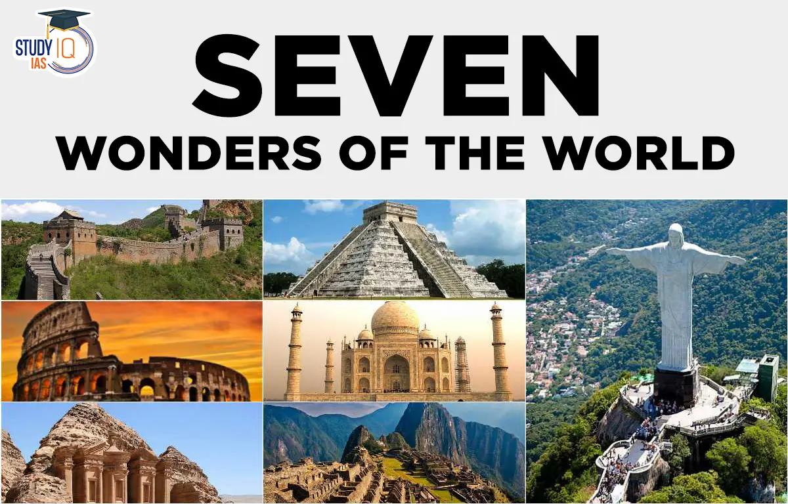

seven Wonders of the World
The Seven Wonders of the Ancient World, also known as the Seven Wonders of the World or simply the Seven Wonders, is a list of seven notable structures present during classical antiquity. The first known list of seven wonders dates back to the 2nd–1st century BC.
While the entries have varied over the centuries, the seven traditional wonders are the Great Pyramid of Giza, the Colossus of Rhodes, the Lighthouse of Alexandria, the Mausoleum at Halicarnassus, the Temple of Artemis, the Statue of Zeus at Olympia, and the Hanging Gardens of Babylon. Using modern-day countries, two of the wonders were located in Greece, two in Turkey, two in Egypt, and one in Iraq. Of the seven wonders, only the Pyramid of Giza, which is also by far the oldest of the wonders, still remains standing, while the others have been destroyed over the centuries. There is scholarly debate over the exact nature of the Hanging Gardens, and there is doubt as to whether they existed at all.

The Great Pyramid of Giza[a] is the largest Egyptian pyramid. It served as the tomb of pharaoh Khufu, who ruled during the Fourth Dynasty of the Old Kingdom. Built c. 2600 BC,[3] over a period of about 27 years,[4] the pyramid is the oldest of the Seven Wonders of the Ancient World, and the only wonder that has remained largely intact. It is the most famous monument of the Giza pyramid complex, which is part of the UNESCO World Heritage Site "Memphis and its Necropolis".[5] It is situated at the northeastern end of the line of the three main pyramids at Giza.
Initially standing at 146.6 metres (481 feet), the Great Pyramid was the world's tallest human-made structure for more than 3,800 years.
The Colossus of Rhodes (Ancient Greek: ὁ Κολοσσὸς Ῥόδιος, romanized: ho Kolossòs Rhódios; Greek: Κολοσσός της Ρόδου, romanized: Kolossós tes Rhódou)[a] was a statue of the Greek sun god Helios, erected in the city of Rhodes, on the Greek island of the same name, by Chares of Lindos in 280 BC. One of the Seven Wonders of the Ancient World, it was constructed to celebrate the successful defence of Rhodes city against an attack by Demetrius I of Macedon, who had besieged it for a year with a large army and navy.
The Lighthouse of Alexandria, sometimes called the Pharos of Alexandria (/ˈfɛərɒs/ FAIR-oss; Ancient Greek: ὁ Φάρος τῆς Ἀλεξανδρείας, romanized: ho Pháros tês Alexandreías, contemporary Koine Greek pronunciation: [ho pʰáros tɛ̂ːs aleksandrěːaːs]; Arabic: فنار الإسكندرية), was a lighthouse built by the Ptolemaic Kingdom of Ancient Egypt, during the reign of Ptolemy II Philadelphus (280–247 BC).[2] It has been estimated to have been at least 100 metres (330 ft) in overall height.[3] One of the Seven Wonders of the Ancient World, for many centuries it was one of the tallest man-made structures in the world.
The Mausoleum at Halicarnassus or Tomb of Mausolus[a] (Ancient Greek: Μαυσωλεῖον τῆς Ἁλικαρνασσοῦ; Turkish: Halikarnas Mozolesi) was a tomb built between 353 and 350 BC in Halicarnassus (present Bodrum, Turkey) for Mausolus, an Anatolian from Caria and a satrap in the Achaemenid Persian Empire, and his sister-wife Artemisia II of Caria. The structure was designed by the Greek architects Satyros and Pythius of Priene.[1][2] Its elevated tomb structure is derived from the tombs of neighbouring Lycia, a territory Mausolus had invaded and annexed c. 360 BC, such as the Nereid Monument.[3]
The Mausoleum was approximately 45 m (148 ft) in height, and the four sides were adorned with sculptural reliefs, each created by one of four Greek sculptors: Leochares, Bryaxis, Scopas of Paros, and Timotheus.[4] The Mausoleum contained total 400 freestanding sculptures.[5] The mausoleum was considered to be such an aesthetic triumph that Antipater of Sidon identified it as one of his Seven Wonders of the Ancient World. It was destroyed by successive earthquakes from the 12th to the 15th century;[6][7][8] it was the last surviving of the six destroyed wonders.
The Temple of Artemis or Artemision (Greek: Ἀρτεμίσιον; Turkish: Artemis Tapınağı), also known as the Temple of Diana, was a Greek temple dedicated to an ancient, localised form of the goddess Artemis (equalized to Diana, a Roman goddess). It was located in Ephesus (near the modern town of Selçuk in present-day Turkey). By AD 401 it had been ruined or destroyed.[1] Only foundations and fragments of the last temple remain at the site.
The earliest version of the temple (a Bronze Age temenos) antedated the Ionic immigration by many years. Callimachus, in his Hymn to Artemis, attributed it to the Amazons. In the 7th century BC, it was destroyed by a flood.
The Statue of Zeus at Olympia was a giant seated figure, about 12.4 m (41 ft) tall,[1] made by the Greek sculptor Phidias around 435 BC at the sanctuary of Olympia, Greece, and erected in the Temple of Zeus there. Zeus is the sky and thunder god in ancient Greek religion, who rules as king of the gods of Mount Olympus.
The statue was a chryselephantine sculpture of ivory plates and gold panels on a wooden framework. Zeus sat on a painted cedarwood throne ornamented with ebony, ivory, gold, and precious stones. It was one of the Seven Wonders of the Ancient World.
The statue was lost and destroyed before the end of the 6th century AD, with conflicting accounts of the date and circumstances. Details of its form are known only from ancient Greek descriptions and representations on coins and art.
The Hanging Gardens of Babylon were one of the Seven Wonders of the Ancient World listed by Hellenic culture. They were described as a remarkable feat of engineering with an ascending series of tiered gardens containing a wide variety of trees, shrubs, and vines, resembling a large green mountain constructed of mud bricks. It was said to have been built in the ancient city of Babylon, near present-day Hillah, Babil province, in Iraq. The Hanging Gardens' name is derived from the Greek word κρεμαστός (kremastós, lit. 'overhanging'), which has a broader meaning than the modern English word "hanging" and refers to trees being planted on a raised structure such as a terrace.